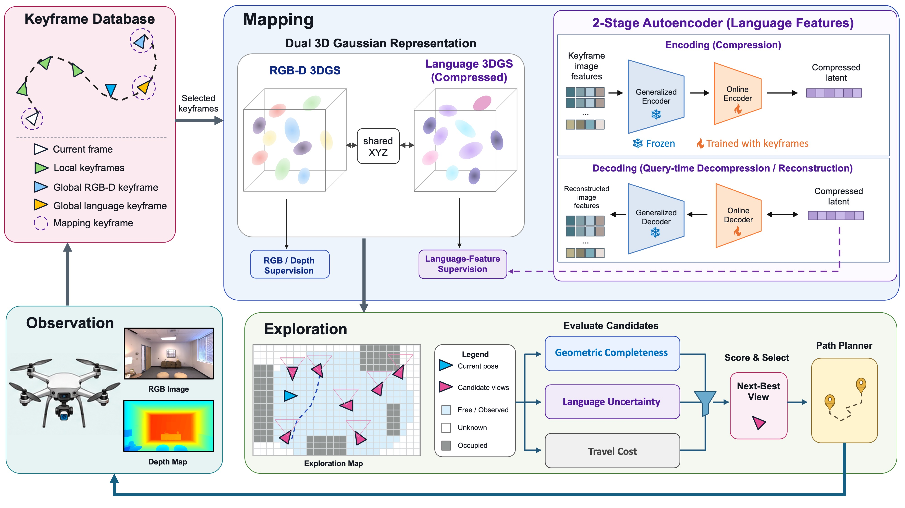

Paper Analysis
01 · Active Mapping Is a Different Input Protocol
普通流式建图按外部给定的视频序列接收图像；主动建图还要决定下一帧从哪里拍。ActiveLang 处理的是后者：在未知场景中，根据当前地图选择视点，取得新的 RGB-D，再增量优化地图。最后得到能渲染颜色、深度、语言特征及不确定性的三维高斯表示，可以用文字查询区域。
实验在 Habitat 中渲染 Replica 和 ScanNet++ 场景，使用真值相机位姿。因此“在线”表示逐步接收和更新，并不表示已经完成未知位姿下的 RGB-only SLAM，也不表示纯前馈实时推理。
开放词汇指查询不局限于训练时固定的分类头。论文使用语言对齐特征与文本嵌入比较；但主要定量评测仍取每场景最频繁的十类，不能把该结果扩展为任意长尾概念、关系或复杂指令都能可靠定位。
Paper Analysis
02 · Reading the Closed Loop in Figure 2

Liyan Chen et al. · Original figure, unmodified · CC BY 4.0 · Paper & Caption ↗
从 Figure 2 左下开始，当前 RGB-D 进入关键帧数据库。局部关键帧支持附近区域优化；颜色或几何重建较差的旧帧，以及语义重建较差的旧帧，加入共享全局池以便再次优化。局部窗口是 32 帧，但整张地图与全局池并没有因此固定为 32 项。
图中央的两组高斯共享三维中心 μ，分别保存 RGB-D 和语义信息。它们的尺度、旋转、不透明度各自独立。语义高斯额外存储 15 维特征 f 与不确定性 u。这使颜色边缘和语义区域能采用不同空间支撑，同时在共同中心上对齐。
右侧的两阶段自编码器把密集 OpenCLIP 特征压缩到地图可承担的维度。下面的探索模块对候选视点渲染覆盖率与语义不确定性，结合移动距离评分，再用 RRT 规划路径。新观测回到左侧，完成一个由地图影响数据采集的闭环。
这张图需要和正文的梯度约束一起读：共享 XYZ 不意味着两种 loss 都更新 XYZ。作者明确规定，中心由 RGB-D 重建更新，语义监督只更新语义参数。
Paper Analysis
03 · Semantic Compression and the Prototype Bank
每个像素的 768 维语言对齐特征先经冻结通用编码器变为 32 维 z，再由在线自编码器 OLAE 编成 15 维 f。查询时经解码回到语言特征空间，与文本比较。训练 OLAE 的重建项同时约束 L1 误差和余弦方向，防止只保留幅值而改变语义方向。
仅按像素平均训练有一个问题：重复出现的大面积表面贡献大量梯度，少见区域可能在压缩中丢失区分性。作者在冻结的 32 维空间维护有容量限制的原型 bank；新特征按余弦相似性匹配，用指数移动平均更新，未匹配的特征形成新原型，满容量后按最近最少使用规则替换。
每个原型是一个反复出现的特征模式，不是有真值类别标签的对象实例。均衡项对 bank 内原型等权，同时保留当前像素采样，兼顾历史模式与模式内部变化。分离项则选取原空间中已有足够差异的原型对，惩罚它们在 15 维空间中变得过于相似。
因此创新不在“存一份 CLIP”，而在在线、分布不均的压缩过程中怎样保留差异。这个 bank 是压缩器的训练记忆；三维地图是另一个持续增长的状态。二者不能合并称为固定容量重建 memory。
f = Eθ(z); ẑ = Dφ(f) ℓ_rec(z) = ||ẑ − z||₁ / 32 + λ_cos [1 − cos(ẑ,z)] L_balanced = η · mean_k ℓ_rec(b_k) + (1−η) · E_z ℓ_rec(z) L_sep = mean_(i,j) max(0, cos(Eθ(b_i),Eθ(b_j)) − m) L_OLAE = L_balanced + λ_sep L_sep
Paper Analysis
04 · The Semantic Loss and Its Actual Gradient Path
地图渲染得到特征 f̂_p 和 log-variance û_p=log σ²。语义 loss 用 exp(−û_p) 缩放特征误差，再加入 û_p/2 项。前一项让不确定观测的误差权重较低，后一项避免模型仅靠无限提高不确定性来逃避重建。d=15，Ω_S 是通过门控的语义监督像素。
直观上，难以解释的语言特征可能获得较大不确定性。但这是对特征重建残差建模，不等同于已经校准的类别错误概率，也不能保证重新看一眼就会消除不确定性：模糊标签或教师偏差也会产生持续误差。
梯度分两条：OLAE 的均衡和分离目标更新在线编码器、解码器；编码后的目标先 detach，再监督语义高斯特征、支撑参数与不确定性。RGB-D loss 更新颜色及几何中心。语义 loss 不穿过 detach 回传到 OLAE，也不直接移动中心。
因此这里语义影响几何的主要反馈是“语义状态→视点选择→获得不同 RGB-D→几何优化”，而不是“语义 loss→中心坐标”。这正是判断它与我们写入前融合方案是否相同时必须核对的路径。
L_sem = mean_p [ exp(−û_p) ||f*_p − f̂_p||² / (2d) + û_p/2 ] f*_p = stop_gradient(Eθ(z_p)); d = 15 L_OLAE → online encoder / decoder L_sem → semantic Gaussian parameters L_RGB-D → Gaussian centers and RGB-D parameters
Paper Analysis
05 · Choosing Which Observations to Learn From
语义学习并不使用每一帧。附录在最多 1,024 个采样的 32 维特征上做贪心分组，以余弦相似度 0.6 判断是否形成新模式。初始化后至少八种模式才正常更新 OLAE；有效深度中位数低于 0.5 m 的极近视图也被拒绝。RGB-D 重建仍可使用这些帧。
连续十次因多样性不足而拒绝时，允许强制一次 OLAE 更新，但不绕过语义地图的多样性门控。这样区分“让压缩器跟上新分布”和“给地图可靠监督”。这些阈值是当前实现设定，不是由理论推出的普适数值。
下一视点同时考虑未映射像素数 n(v)、移动距离和已覆盖像素上的平均语义 log-variance。候选平均覆盖不足 0.5 时暂不使用语义项，避免地图还没有支撑就按其不确定性选视点；每次规划重新判断。各项在候选集合内归一化后相乘。
覆盖与语义需求并不总一致：某视点可能看见新的几何，但语义上下文很差；另一视点可能没有新增表面，却有利于辨认区域。乘积打分是作者实现这种折中的启发式，不是形式化的期望信息增益最大化。
score(v) = [1 − softmax(distance)_v] · softmax(log max(n,10⁻⁶))_v · U_v U_v = softmax(mean semantic log-variance)_v, if mean coverage ≥ 0.5 U_v = 1, otherwise
Paper Analysis
06 · Evidence for Semantic Quality and Geometry
主表在 Replica、ScanNet++ 各八场景评估。下表保留 novel-view segmentation 与直接三维 segmentation，均以 mIoU 越高越好。ActiveLang 的数据由主动轨迹采集，两个被动基线沿给定轨迹；基线又在共享 RGB-D 骨干上重实现。因此这是完整系统比较，不是固定输入上仅增加一个语义 loss 的实验。
Replica 新视图 mIoU 从 OnlineLangSplat 的 37.81 到 43.66，三维从 26.56 到 30.91；ScanNet++ 分别从 9.22 到 20.13、16.24 到 21.48。语义收益明确，但不能全部归给规划器或原型机制中的某一个。
几何表更需要保留反例：ActiveLang 的 Replica accuracy/completion 为 1.84/2.50 cm，ActiveGAMER 为 1.19/1.56 cm；5 cm completeness ratio 为 92.92% 对 96.50%。ActiveLang 虽比被动开放词汇基线改善，但并未超过专注几何的主动方法。PSNR 接近也不能替代几何精度证据。
| Dataset / Method | NVS 2D mIoU ↑ | 3D mIoU ↑ |
|---|---|---|
| Replica / LangSplat | 27.65 | 22.89 |
| Replica / OnlineLangSplat | 37.81 | 26.56 |
| Replica / ActiveLang | 43.66 | 30.91 |
| ScanNet++ / LangSplat | 9.06 | 12.22 |
| ScanNet++ / OnlineLangSplat | 9.22 | 16.24 |
| ScanNet++ / ActiveLang | 20.13 | 21.48 |
Paper Analysis
07 · What the Ablations Support
四场景消融比主表更适合定位贡献。完整模型 NVS/3D mIoU 为 40.91/27.34；去掉原型机制为 38.44/21.12，去掉语义监督门控为 38.13/21.13。去掉语义不确定性规划为 39.88/27.09，下降小得多。这支持压缩与监督管理的重要性，不能把主要增益都说成语义主动规划带来的。
去掉原型 bank 时分离 loss 也无法工作，所以消融衡量的是组合机制，未隔离均衡与分离各自的贡献。只用局部关键帧的语义得分甚至略高于完整系统，但深度 L1 从 0.85 增到 1.18 cm：全局池对几何和颜色更明显。
附录 room0 的压缩诊断也没有全面恢复语义：table 的 Full-stage accuracy 从 27.3% 到 55.2%，但 sofa 从 24.0% 降到 0，lamp 与 ceiling 在两种方法中都为 0。十类 macro 从约 44.4% 到 45.7%。原型机制改善了一部分区分性，不等于压缩已解决所有类别混淆。
此外，正文称 4-DoF 限制固定 roll/pitch，附录运动描述却允许目标视点保留采样 pitch，仅过渡视点保持零 pitch。该处版本表述不完全一致；复现姿态消融前需核对配置。论文声明代码将在接收后发布，本笔记不把图示当作已验证实现。
Paper Analysis
08 · What Transfers to Semantic Memory Research
对我们最直接的启发是：语义进入 memory 之前，压缩本身就可能破坏少见模式。只报告平均特征重建 loss 不足以确认语义被保留；应检查边界、稀有区域以及旧帧信息是否仍能被未来预测利用。原型均衡可以作为候选监督策略，但它在 ActiveLang 中服务于在线地图压缩，不是六个历史 token 的解码方案。
如果研究目标是固定 RGB 流上的 LingBot-Map，就不应引入主动轨迹后把数据优势算作 memory 改善。更清楚的对照是固定帧序列、几何监督与缓存预算，再比较是否引入语义，以及语义在写入前还是输出端融合。
资源方面，论文使用两张 48 GB RTX A6000：语言管线约 6 GB，地图 GPU 随场景增长，从约 11 GB 到 25 GB，并可到约 35 GB。有限原型 bank 没有使整个系统固定内存；也没有证明其高频在线优化适合直接加入实时前馈重建。
本论文证明语义可以参与监督筛选与观测决策，尚不能回答“语义梯度是否改善固定输入下的几何预测”。这一区分能把我们的实验主张限定得更准确。
Discussion
Reading Questions
Does semantic loss move Gaussian centers?
按正文设计，不会。中心由 RGB-D 目标更新；语义目标只优化语义参数，编码目标还经过 detach。
Is the uncertainty a category error probability?
不是。它来自语义特征重建的异方差模型，论文将其作为再观测价值的代理，未证明它是校准分类概率。
Which ablation most strongly supports the method?
四场景中原型机制和监督门控的去除带来较大的 3D mIoU 下降；单独去掉语义不确定性规划影响较小。
Is the entire memory bounded?
不是。原型库有界，但高斯地图和全局关键帧存储仍可增长。
References
One original method figure is reproduced under CC BY 4.0 with attribution. No modifications. Results refer to the version linked above.
Verified on 2026-10-21. Paper results refer to the linked versions. Repository references were checked on this date.